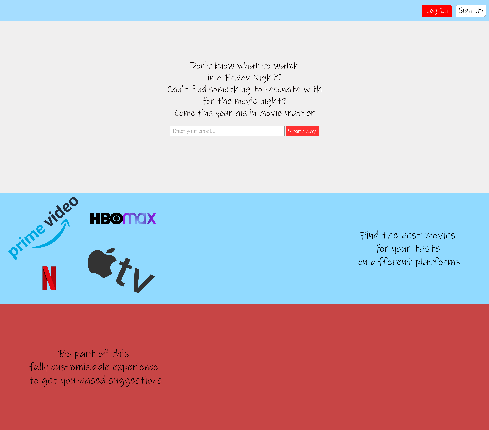
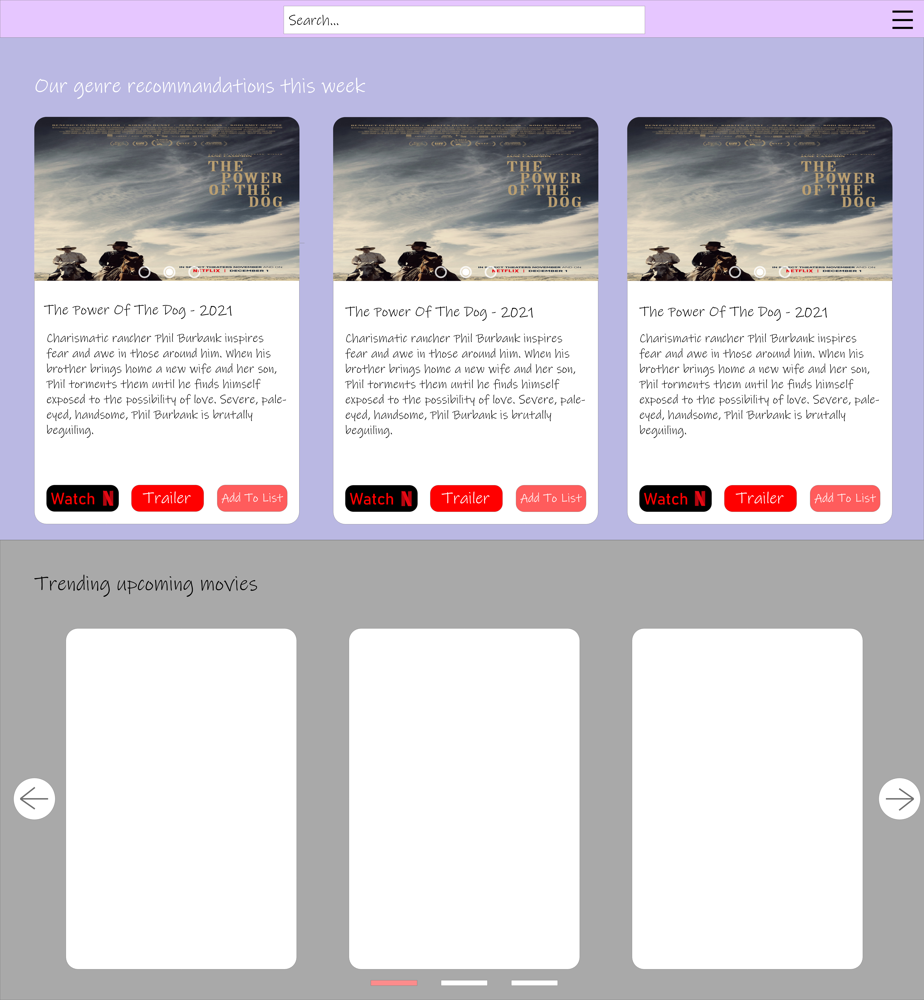
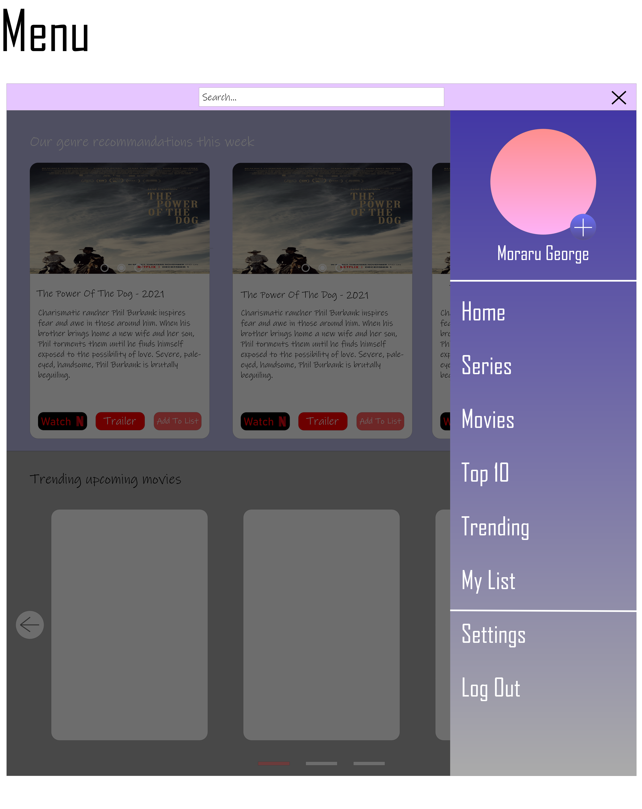
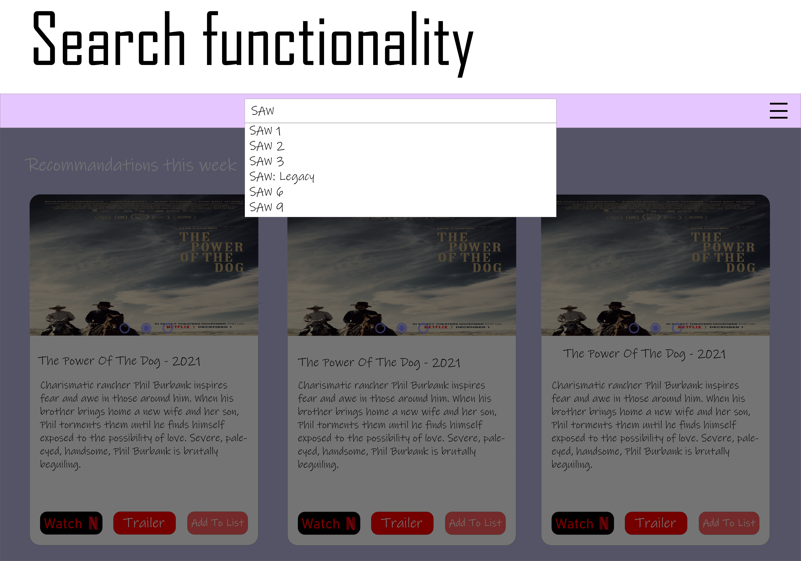

Homepage




UI Design Patterns
- Closable Panels - User can minimize the content in order to have a better experience
- Navigation Tabs - User can come back to home or navigate through all the application using navigation menu
- Cards - For a modern experience for the user, we used cards to display the movies
- Carousel - Upcoming movies are displayed in a carousel in order to group movies by popularity
- Settings - User can add genres and modify the UI for his preferences after the first log in
- Continuous Scrolling - The app is single-paged, using continuous scrolling